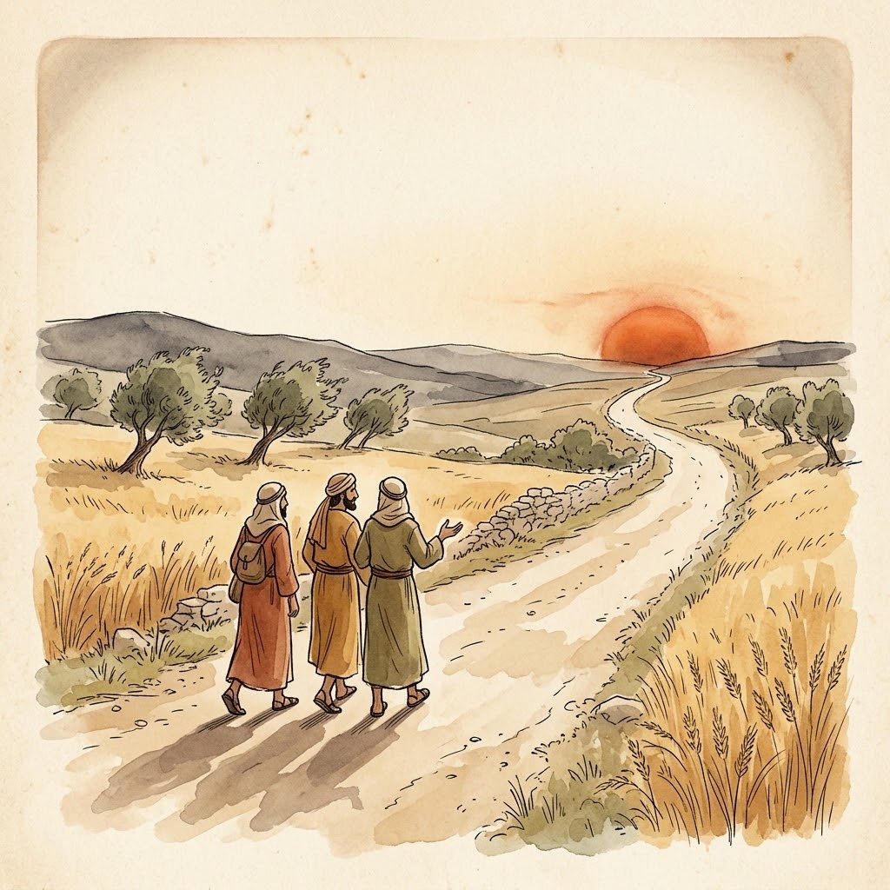
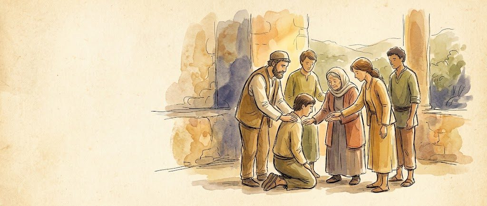
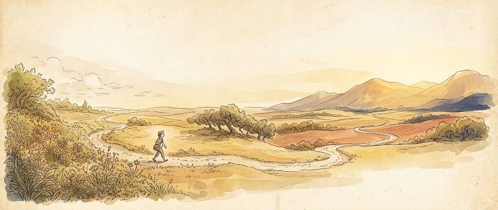
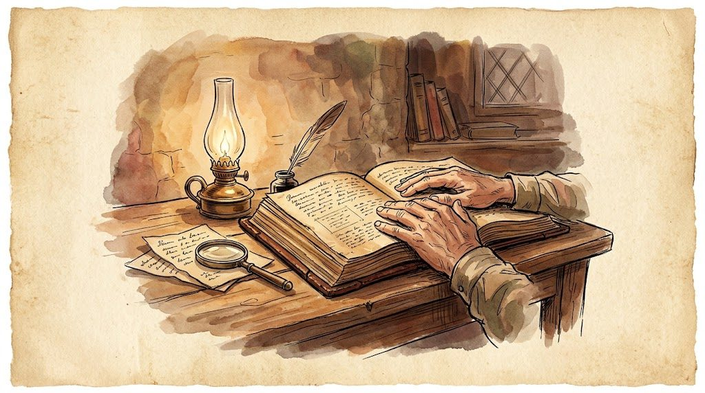

Formação bíblica
Estudar a Bíblia até o coração arder.
Cursos de Bíblia e vida cristã para entender de verdade: no seu ritmo, sem viés de denominação e com um tutor que acompanha.
Grátis · sem cartão · leva um minuto

Como funciona
Do cadastro ao primeiro estudo em poucos minutos.
-
1
Escolha um curso
Comece pelo que faz sentido pra você agora.
-
2
Estude tópico a tópico
Leitura, slides e aplicação. Pare e volte quando puder.
-
3
O tutor acompanha
Seu progresso fica salvo e o tutor aponta o que revisar.
Cursos em destaque
Um já está aberto. Os próximos chegam em breve.

AbertoFormação do Obreiro I
Firmados na Palavra
O chamado, a Bíblia como autoridade, a doutrina básica da fé e as disciplinas que sustentam quem serve.
Começar →

Em brevePanorama da Bíblia
A história que une os 66 livros
Criação, queda, redenção e restauração: uma visão de conjunto pra nunca mais se perder entre os livros.

Em breveComo Estudar a Bíblia
Ferramentas para ler com cuidado
Contexto, gênero literário e a regra de ouro: ouvir o texto antes de aplicá-lo.
E mais 10 cursos em preparação: João, Romanos, Salmos, Vida de Oração, Doutrinas Essenciais e outros.
“Não estava ardendo o nosso coração, quando ele nos falava pelo caminho e nos abria as Escrituras?” — Lucas 24.32